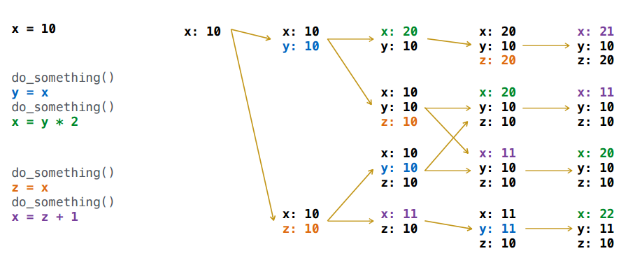

Extra Homework 3
Due by 11:59pm on Wednesday, 05/02
Instructions
Download extra03.zip. Inside the archive, you will find a file called extra03.py, along with a copy of the Ok autograder.
Submission: When you are done, submit with
python3 ok --submit. You may submit more than once before
the deadline; only the final submission will be scored.
Using Ok
The ok program helps you test your code and track your progress.
The first time you run the autograder, you will be asked to log in with your
@berkeley.edu account using your web browser. Please do so. Each time you run
ok, it will back up your work and progress on our servers.
You can run all the doctests with the following command:
python3 okTo test a specific question, use the -q option with the
name of the function:
python3 ok -q <function>By default, only tests that fail will appear. If you
want to see how you did on all tests, you can use the -v
option:
python3 ok -vIf you do not want to send your progress to our server or you have any
problems logging in, add the --local flag to block all
communication:
python3 ok --localWhen you are ready to submit, run ok with the
--submit option:
python3 ok --submitReadings: You might find the following references useful:
Q1: Interleave
We know that the behavior of multiple threads can be unpredictable.
However, in many cases there are only a finite set of possible outcomes that can result from executing a set of threads in parallel. In this problem, you will compute all possible final states of an environment, given an initial set of bindings from names to values and a list of threads.
Your job is to implement all_final_frames, a function that takes an
initial state and a list of threads and returns a list of final states the
threads could leave the environment in. This list can have duplicates and is
unordered.
def all_final_frames(initial_frame, threads):
"""
>>> s = all_final_frames({'x' : 10}, [increment, double])
>>> sorted(set(u['x'] for u in s))
[11, 20, 21, 22]
>>> sorted(set((u['x'], u['y'], u['z']) for u in s)) # x, y, z triples
[(11, 10, 10), (20, 10, 10), (21, 20, 10), (22, 10, 11)]
>>> increment.lock = True
>>> double.lock = True
>>> s = all_final_frames({'x' : 10}, [increment, double])
>>> sorted(set(u['x'] for u in s))
[21, 22]
>>> increment.lock = False
>>> double.lock = False
>>> s = all_final_frames({'x' : 2}, [increment, double, square])
>>> sorted(set(u['x'] for u in s))
[3, 4, 5, 6, 8, 9, 10, 16, 17, 18, 25, 36]
>>> increment.lock = True
>>> double.lock = True
>>> s = all_final_frames({'x' : 2}, [increment, double, square])
>>> sorted(set(u['x'] for u in s))
[4, 5, 8, 9, 10, 16, 17, 18, 25, 36]
>>> square.lock = True
>>> s = all_final_frames({'x' : 2}, [increment, double, square])
>>> sorted(set(u['x'] for u in s))
[9, 10, 17, 18, 25, 36]
"""
final_frames = []
def execute_all(frame, threads):
"*** YOUR CODE HERE ***"
execute_all(initial_frame, threads)
return final_framesUse Ok to test your code:
python3 ok -q all_final_frames